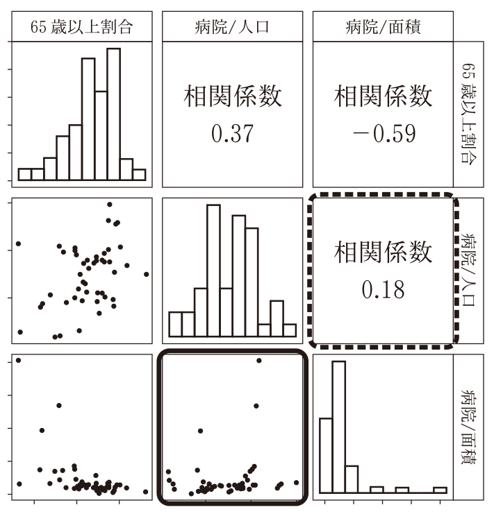
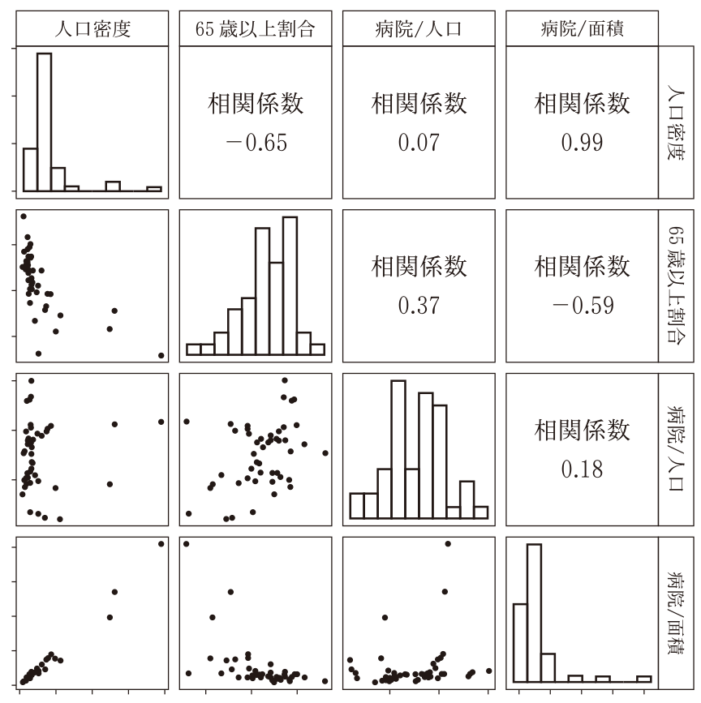
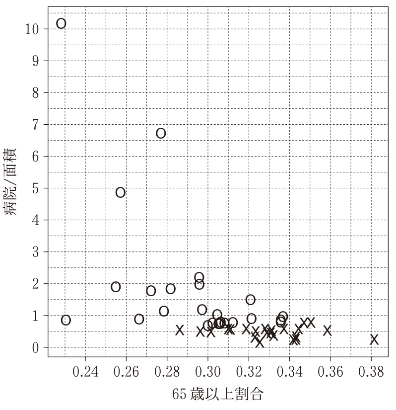
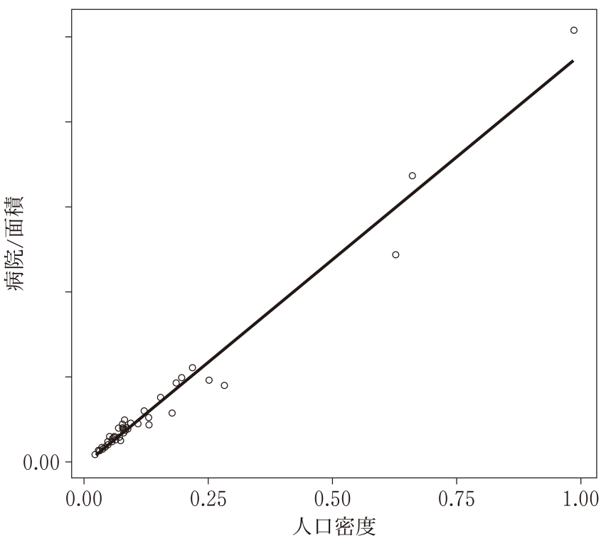

第4問 次の文章を読み，後の問い（問1～5）に答えよ。（配点25）
S さんは，情報の授業の研究課題のテーマを「高齢化」とした。内容を検討する中で，データを用いて高齢化と病院数との関係について調べようと考えた。Web 上で公開されているオープンデータから，47都道府県それぞれの病院数などを含めた表1のデータを作成した。このデータには，各都道府県の総人口と，15歳未満，15～64歳，65歳以上の三つの年齢層の人口，面積，病院数の項目がある。
| 番号 | 都道府県 | 総人口（万人） | 15歳未満人口（万人） | 15～64歳人口（万人） | 65歳以上人口（万人） | 面積（km²） | 病院数（施設） |
|---|---|---|---|---|---|---|---|
| 1 | 北海道 | 518.3 | 54.4 | 295.3 | 168.6 | 22699.20 | 3830 |
| 2 | 青森県 | 122.2 | 12.7 | 67.6 | 41.9 | 3253.17 | 939 |
| 3 | 岩手県 | 119.7 | 12.9 | 65.9 | 40.9 | 3751.37 | 954 |
| 4 | 宮城県 | 229.0 | 26.4 | 137.1 | 65.5 | 3185.91 | 1795 |
| 5 | 秋田県 | 94.5 | 9.0 | 49.5 | 36.0 | 3233.29 | 855 |
| ⋮ | |||||||
| 47 | 沖縄県 | 146.8 | 24.2 | 88.7 | 33.9 | 1126.13 | 967 |
（出典：総務省統計局のWeb サイトのデータより作成）
（注）面積は可住地面積のことであり，各都道府県の総面積から林野面積と主要湖沼面積を引いた土地の面積を表している。
問1 次の文章を読み，空欄 ア ・ イ に入れるのに最も適当なものを，後の解答群のうちから一つずつ選べ。
S さんは，このデータをもとにして，各年齢層の人口と病院数との関係を調べるために，統計ソフトウェアを用いて，四つの項目のそれぞれの組合せの相関係数を調べた。その結果が，表2である。
| 15歳未満人口 | 15～64歳人口 | 65歳以上人口 | 病院数 | |
|---|---|---|---|---|
| 15歳未満人口 | 1 | |||
| 15～64歳人口 | 0.99 | 1 | ||
| 65歳以上人口 | 0.99 | 0.98 | 1 | |
| 病院数 | 0.97 | 0.98 | 0.95 | 1 |
一般的に相関係数は， ア ことから，表2の数値からは， イ ことを読み取ることができた。しかし，これだけでは65歳以上人口と病院数との間の特徴的な関係を見つけることが難しいと考えた。
問2 次の文章を読み，後の問い（a・b）に答えよ。
S さんは，各都道府県の総人口に対する65歳以上人口の割合（「65歳以上割合」）を高齢化の指標として求め，病院数に関しては，各都道府県の人口1万人あたりの病院数（「病院/人口」）と面積1km2あたりの病院数（「病院/面積」）を求め，これらの関係を検討するために各項目間の散布図と相関係数を合わせた図（以下，散布図行列と呼ぶ。）として図1を作成した。
この図では，例えば，3行目（最下行）の左から二つ目の散布図（太実線枠で示す。）は，横軸を「病院/人口」，縦軸を「病院/面積」として各都道府県の値を点で表したものである。また，それに対応した相関係数の値が，2行3列目の0．18（破線枠で示す。）である。さらに，左上から右下への対角線上には各項目のヒストグラムが描かれている。

a 次の文章中の空欄 ウ に入れるのに最も適当なものを，後の解答群のうちから一つ選べ。
「病院/人口」が，人口に対して診療を受けられる可能性のある病院数を検討するための指標になると考えられるとすると，「病院/面積」は， ウ のための指標になると考えることができる。
b 次の文章中の空欄A・Bに入る語句の組合せとして最も適当なものを，後の⓪～③のうちから一つ選べ。 エ
S さんは，図1において，「65歳以上割合」と「病院/人口」の相関係数と，「65歳以上割合」と「病院/面積」の相関係数について，符号が異なっていることに気付いた。このことは，『「65歳以上割合」が大きい都道府県では，人口あたりの病院数はA，面積あたりの病院数はBなる傾向がある』ことを示している。
問3 次の文章を読み，空欄C・Dに入る語句の組合せとして最も適当なものを，後の⓪～③のうちから一つ選べ。 オ
「65歳以上割合」と「病院/人口」の関係および「65歳以上割合」と「病院/面積」の関係をより詳しく調べるために担当の先生に相談したところ，これらの項目の病院数の分母となっている「総人口」と「面積」に関係する指標を作って調べてはどうか，とアドバイスを受けた。
そこでS さんは，各都道府県の総人口（万人）を面積（km2）で割った値である「人口密度」（万人/km2）が，人口の「過疎・過密」の程度を表していると考えて，図1に「人口密度」を含めた散布図行列（図2）を作成した。

これまでの検討結果をもとに次のような仮説を立てることができる。
問4 次の文章を読み，空欄 カ ～ ク に入れるのに最も適当なものを，後の解答群のうちから一つずつ選べ。
S さんは，47都道府県を「人口密度」をもとに二つのグループに分けることにした。図2の「人口密度」のヒストグラムを見て， カ ことから，平均値をもとにして分けることが難しいと考え，「人口密度」の中央値（約0．078万人/km2）を基準にし，「人口密度」が中央値未満の都道府県をX グループ，中央値以上の都道府県をO グループとした。さらに，「65歳以上割合」と「病院/面積」の散布図（図3）を作成した。この散布図では，点の代わりにグループ名で表している。
ここで，X グループとO グループを見比べると， キ ことや ク ことがわかった。

問5 次の文章を読み，空欄 ケ に入れるのに最も適当なものを，後の解答群のうちから一つ選べ。
S さんは，「人口密度」（万人/km2）から「病院/面積」（施設/km2）が推定できないかと考え，統計ソフトウェアを用いて回帰直線の方程式を計算し，図4の散布図と回帰直線を作成した。ただし，設問の都合で縦軸の一部の数値は消してある。また回帰直線の方程式は，次のとおりである。
（「病院/面積」の予測値）＝9．70×「人口密度」－0．08
この回帰直線の方程式から，「人口密度」が0．3（万人/km2）である都道府県の「病院/面積」は，1km2あたり ケ 施設であると予測することができる。
